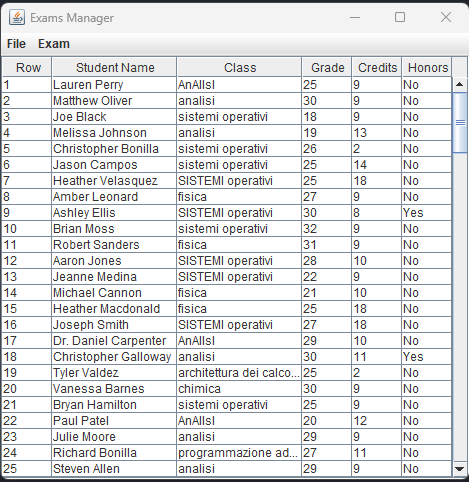

An exam management application in Java, developed using Model-View-Controller design pattern. It includes a {@link javax.swing} GUI.

User can add two types of exam:
By double clicking on an exam entry, the user can modify or remove it. Multiple rows removal is also allowed: user has to select the desired rows and click Backspace on the keyboard.
The application presents a filter feature, that allows to filter exam entries by student's name or name of the class. Moreover, it is possible to get an histogram with grades frequencies and see the weighted average of all the filtered exams.
@author Andrea Lavino (176195)